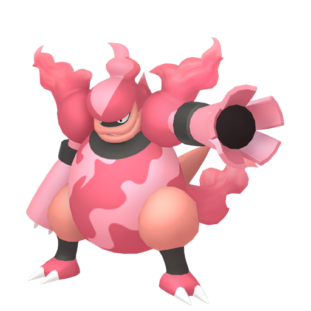
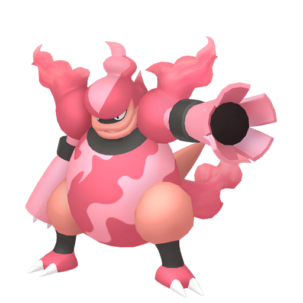
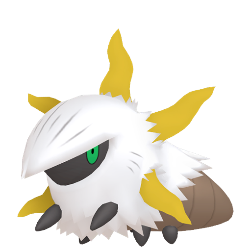
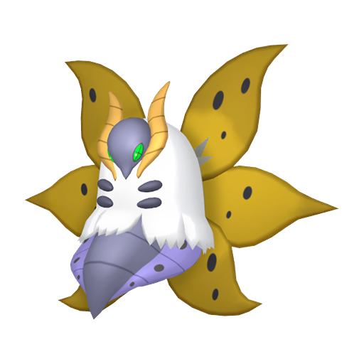
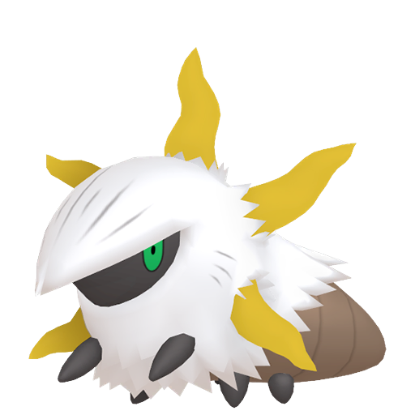
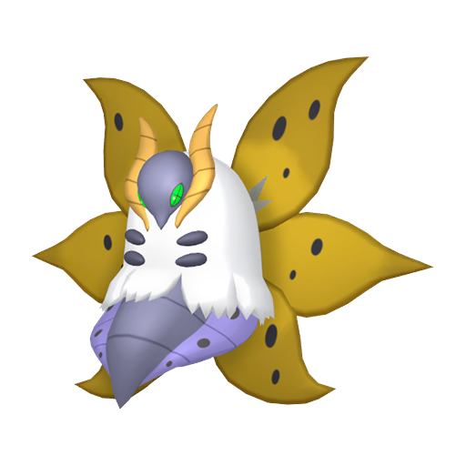

Qu'est-ce que la méthode Masuda de Shiny Hunting ?
La méthode Masuda est une technique de chasse aux Pokémon chromatiques (shiny) disponible depuis les
jeux de la quatrième génération soient Diamant, Perle et Platine.
Elle consiste à faire se reproduire deux Pokémon spécifiques pour augmenter
les chances de rencontrer un Pokémon shiny.
Comment faire ?
Mettre en place la méthode Masuda est très simple, il vous faudra deux pokemon en particulier :
Le Pokemon
Il vous faudra bien entendu le pokemon que vous souhaité en shiny et également un pokemon pouvant se reproduire avec ce dernier.
Le plus simple est d'utiliser un Métamorph pouvant se reproduire avec tous les pokémon.
A noter :
Utiliser un Métamorph d'origine étrangère à votre pays augmentera les chances d'obtenir un Shiny !
De plus il vous faudra un pokémon ayant le talent Armumagma, Corps Ardent ou Turbine afin de faire éclore les oeufs plus rapidement.
| Talent |
Pokemon |
| Armumagma |
   |
| Corps Ardent |
           |
| Turbine (Uniquement sur EB) |
 |
*EB = Epée et Bouclier
Objets
Aucun objet n'est obligatoire pour effectuer cette méthode, cependant certains sont utile afin d'augmenter vaut chance.
Le charme Chroma  est un bonus à avoir afin d'augmenter
les chances de trouver un pokemon shiny.
est un bonus à avoir afin d'augmenter
les chances de trouver un pokemon shiny.
Le charme Ovale  est un bonus à avoir afin d'augmenter
le nombre oeufs produits.
est un bonus à avoir afin d'augmenter
le nombre oeufs produits.
La shasse
Hors Ecarlate et Violet
-
1
- Placer vaut deux pokémon reproducteur dans la pension.
-
2
- Placer en tête d'équipe votre pokemon avec le talent Armumagma, Corps Ardent ou Turbine
-
3
- Récupérer au près du PNJ devant la pension les oeufs dès qu'il vous indiquera qu'il en possède un (par un mouvement ou lui parler).
-
4
- Faire éclore l'oeuf.
-
5
- Continuer à récupérer et faire éclore les oeufs jusqu'à obtenir votre shiny.
Dans Ecarlate et Violet
-
1
- Placer vaut deux pokémon reproducteur dans votre équipe pour pokemon Ecarlate et Violet puis démarrer un pique-nique
-
2
- Effectuer un sandwich augmentant la production d'oeufs.
-
3
- Récupérer dans votre panier les oeufs.
-
4
- Une fois le sandwich termier, mettre en tête d'équipe votre pokemon avec le talent Armumagma, Corps Ardent ou Turbine.
-
5
- Faire éclore vos oeufs.
-
6
- Une fois tous les oeufs éclots recommencer depuis le début avec votre pique-nique.